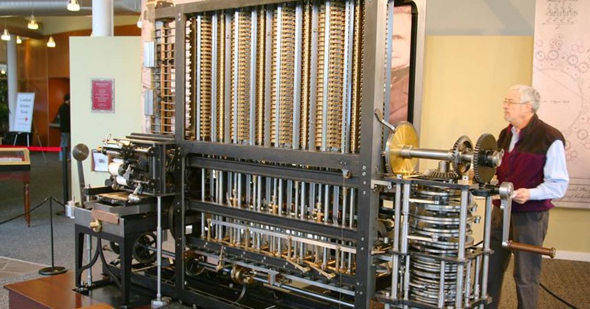
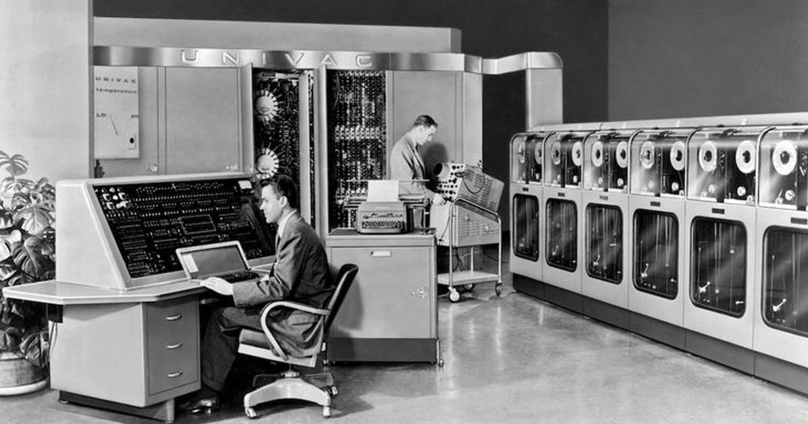
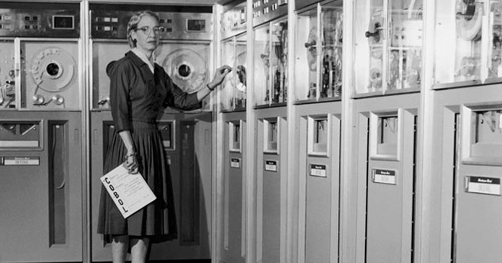
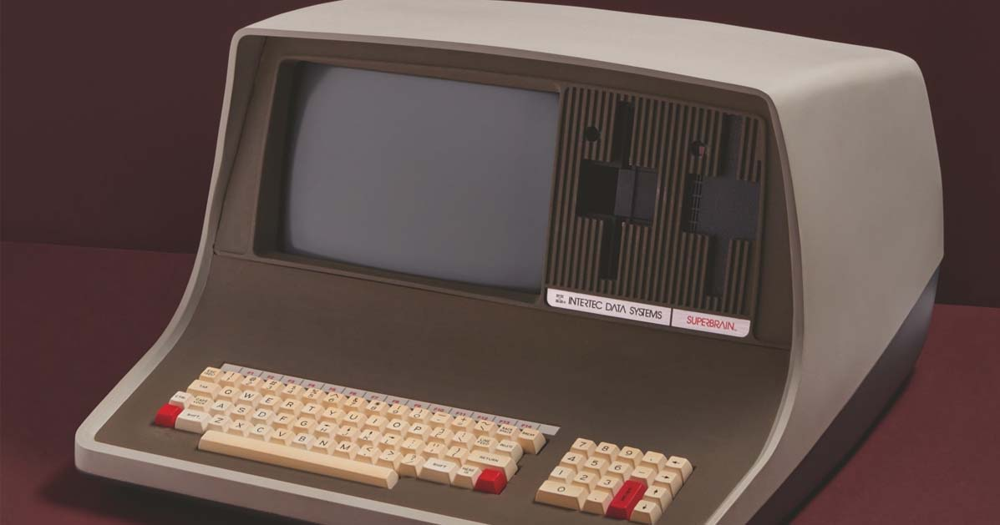
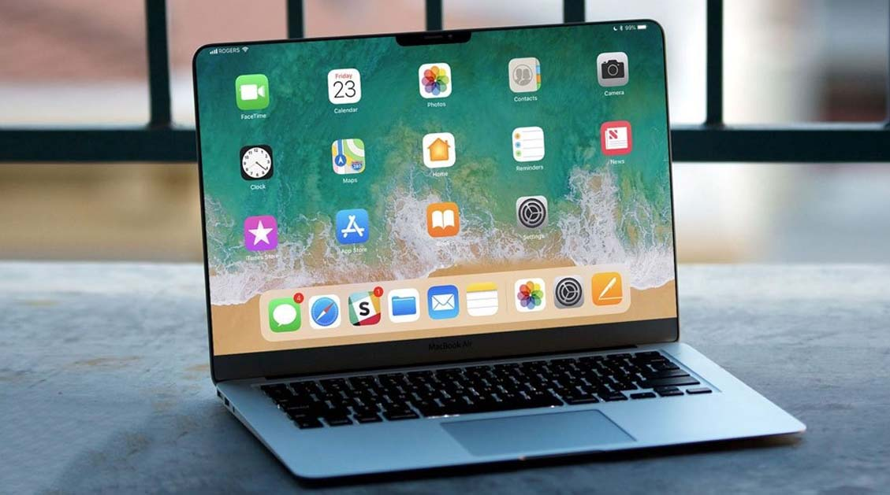

Sejarah Tentang Komputer
Pontianak, 31 Juli 2022 - 21.48
oleh Irfanda Anugerah (VANZGADGET.COM)
Sebagian besar kegiatan yang dilakukan manusia di era modern ini dilakukan menggunakan komputer. Terlebih di saat pandemi seperti ini, di mana seluruh aktivitas bertransformasi menjadi serba online.
Perangkat komputer yang awalnya ditujukan hanya sebagai sarana penunjang pekerjaan, kini sudah menjadi suatu kebutuhan yang wajib dimiliki oleh masyarakat.
Sebelum dilengkapi oleh fitur serba canggih seperti sekarang ini, perkembangan komputer diawali dari sebuah inovasi sederhana yang lahir sejak tahun 1800-an.
Munculnya Komputer Pertama

Komputer pertama kali ditemukan pada 1822 oleh seorang ahli matematika asal Inggris, Charles Babbage. Mulanya, Babbage bermaksud untuk menciptakan sebuah mesin hitung bertenaga uap yang dapat menghitung tabel angka.
Mesin tersebut kemudian ia beri nama "Difference Engine 0" dan digadang-gadang sebagai komputer pertama di dunia. Bentuk Difference Engine 0 sendiri sangat jauh berbeda dari kebanyakan model komputer modern saat ini.
Meski demikian, prinsip kerja yang dimiliki mesin tersebut sama seperti komputer modern, yakni mampu melakukan penghitungan angka alias komputasi.
Hingga pada 1890, seorang penemu bernama Herman Hollerith merancang sebuah sistem kartu yang mampu menghitung hasil sensus AS yang dilakukan pada 1880.
Berkat inovasi tersebut, Hollerith berhasil menghemat anggaran pemerintah sebanyak 5 juta dollar AS. Selanjutnya, Hollerith terus mengembangkan potensinya di ranah teknologi hingga akhirnya sukses mendirikan perusahaan komputer IBM.
Cikal Bakal Komputer Digital
Cikal bakal komputer digital pertama dikembangkan pada 1930. Adalah Alan Turing yang pertama kali mengembangkan mesin tersebut.
Ia merupakan peneliti matematika yang sukses mengembangkan mesin yang dapat menjalankan sekumpulan perintah.
kontribusinya, mesin tersebut kemudian diberi nama mesin Turing (Turing Machine), termasuk sebuah simulasi gagasannya yang bernama uji Turing.
Komputer digital pertama dikembangkan oleh Konrad Zuse, seorang insinyur mesin asal Jerman. Sebelum perang dunia kedua pecah, Zuse membangun komputer digital pertama bernama Z1 yang dapat diprogram.
Pada 1936 di ruang tamu orang tuanya di Berlin, ia merakit pelat logam, pin, dan menciptakan sebuah mesin yang dapat melakukan perhitungan tambah dan kurang.
Meskipun model awal komputer tersebut dihancurkan saat Perang Dunia II, Zuse digadang sebagai pencipta komputer digital pertama.
Selama perang dunia kedua berlangsung tepatnya pada 1943, John Mauchly berhasil menciptakan mesin bernama Electronic Numerical Integrator and Calculator (ENIAC).
Awal mula diciptakannya ENIAC adalah untuk membantu Angkatan Darat dalam memprediksi serangan. ENIAC sendiri dibekali dengan kemampuan analisa yang dapat menghitung ribuan masalah dalam hitungan detik.
ENIAC memiliki berat hingga 30 ton dan membutuhkan ruang seluas 457 meter persegi untuk menempatkan mesin komputer tersebut.
Hal ini disebabkan oleh banyaknya komponen pendukung yang dimiliki ENIAC, seperti 40 lemari kabinet, 6.000 sakelar, serta 18.000 tabung hampa.
Lahirnya Bahasa Pemrograman
Pada 1954, bahasa pemrograman dicetuskan untuk pertama kalinya oleh ilmuwan komputer wanita bernama Grace Hopper. Bahasa pemrograman bernama COBOL ini hadir untuk membantu pengguna komputer dalam menyampaikan perintah dalam bahasa Inggris.
Sebab sebelumnya, pengguna komputer hanya dapat memberikan instruksi pada komputer menggunakan kumpulan baris angka. Sejak saat itu, bahasa pemrograman kemudian ikut berkembang seiring dengan evolusi yang terjadi komputer.
Selanjutnya, terciptalah bahasa pemrograman baru bernama FORTRAN, yang dikembangkan oleh tim pemrograman IBM yang dipimpin oleh John Backus pada tahun 1954.
Sebagai salah satu perusahaan yang fokus pada teknologi, IBM berambisi untuk memimpin tren komputer global. Perusahaan mulai menciptakan perangkat bernama IBM 650 untuk mulai dipasarkan secara massal.
Sampai pada 1965, komputer dikenal sebagai alat penunjang untuk para ahli matematika, insinyur, hingga masyarakat kalangan umum. Adapun komputer tersebut dikenal dengan nama Programma 101.
Jika dibandingkan dengan ENIAC, ukuran Programma 101 terbilang jauh lebih ringkas. Komputer ini memiliki ukuran sebesar mesin tik, bobot seberat 29 kg, dan sudah dilengkapi dengan printer bawaan.
Komputer Pribadi
Tahun 1970-an dapat dibilang sebagai era kelahiran komputer pribadi. Ditandai dengan munculnya Xerox Alto, sebuah komputer pribadi yang dapat menjalankan perintah seperti mengirimkan e-mail dan mencetak (print) dokumen.
Satu hal yang paling beda dari Xerox Alto adalah desainnya yang sudah menyerupai komputer modern. Sebab, komputer ini telah dilengkapi dengan mouse, keyboard, serta layar.
Di tahun yang sama, beberapa penemuan besar turut terjadi. Beberapa di antaranya seperti diciptakannya disket, ethernet, serta chip Dynamic Access Memory (DRAM). Sementara itu, Apple mulai didirikan pada tahun 1976 oleh Steve Jobs dan Steve Wozniak. Keduanya turut memperkenalkan Apple I, sebuah komputer single-circuit pertama.
Desain komputer pribadi kemudian disempurnakan oleh IBM, lewat sebuah perangkat bernama Acorn. Komputer ini sudah dilengkapi dengan chip Intel, dua slot disket, keyboard, serta layar monitor yang berwarna.
Berbagai penemuan lain kemudian ditemukan pada 1983. CD-ROM resmi hadir sebagai alat penyimpanan yang mampu menampung data hingga 550 MB. CD-ROM kemudian ditetapkan sebagai standar umum komputer.
Pada tahun yang sama, Microsoft resmi memperkenalkan Word, diikuti oleh Apple yang merilis Macintosh di tahun 1984. Macintosh dikenal sebagai komputer pertama yang dapat dikendalikan menggunakan mouse serta dilengkapi dengan antarmuka pengguna grafis.
Seakan tak mau ketinggalan, Microsoft turut meluncurkan sistem operasi Windows yang menawarkan keunggulan dari multi-tasking dan sudah dibekali dengan antarmuka grafis.
Apple kemudian menelurkan sebuah inovasi baru bernama Powerbook, sebuah seri laptop portabel yang dapat dibawa kemana saja.
Komputer Era 2000-an
Memasuki abad ke-21, laju perkembangan perangkat komputer semakin pesat, seiring dengan perkembangan teknologi. Penggunaan disket dan CD-ROM mulai tersisihkan oleh media penyimpanan portabel yang lebih canggih, yakni USB drive.
Sementara itu, Apple semakin gencar menelurkan inovasi terbaru lewat sistem operasi bernama Mac OS X. Microsoft pun sebagai kompetitor juga meluncurkan sistem operasi yang lebih modern, Windows XP.
Apple berhasil memimpin tren pasar berkat hadirnya iTunes. Kurang dari satu pekan setelah dirilis, aplikasi pemutar musik ini sudah digunakan untuk mengunduh lebih dari 1 juta judul lagu. Beberapa aplikasi seperti YouTube, Mozilla Firefox, dan MySpace turut hadir di era modern ini.
Hingga pada 2006, tren penggunaan laptop semakin menjamur di masyarakat. Hal ini turut didorong oleh hadirnya perangkat laptop MacBook Pro yang diperkenalkan oleh Steve Jobs.
Perkembangan MacBook kembali dilanjutkan oleh generasi terbaru MacBook Air pada 2007. Pada tahun yang sama, Steve Jobs turut memperkenalkan iPhone untuk pertama kalinya, diikuti oleh iPad pada 2010.
Komputer Era Internet of Things
Tahun 2011 ditandai sebagai tahun lahirnya berbagai penemuan Internet of Things (IoT). Nest Learning Thermostat yang hadir pada tahun ini kemudian dikenal sebagai perangkat IoT pertama di dunia. Selanjutnya,
Berbagai produk IoT lainnya semakin menjamur di pasaran. Sebut saja seperti Apple Watch yang hadir pada 2015. Untuk pertama kalinya, Apple turut mengumumkan iPadOS, sebuah sistem operasi yang dikhususkan untuk iPad.

Tentang Penulis
Irfanda Anugerah adalah seorang Mahasiswa semester 4 di salah satu Politeknik Negeri yang ada di kalimantan. Dia sangat menyukai hal berbau Anime dan juga memiliki Sense Design yang lumayan bagus. Berbekal skill Corel Draw & Photoshop yang sangat membantu dia dalam membuat Web ini.
Share our website


Introduction

Vanz Gadget adalah situs web artikel bertema gadget. Dibuat pada tanggal 30 Mei 2022 oleh Irfanda Anugerah..
Artikel Populer


Artikel Lainnya
5 Smartphone dengan Fast Charging Tercepat Saat Ini